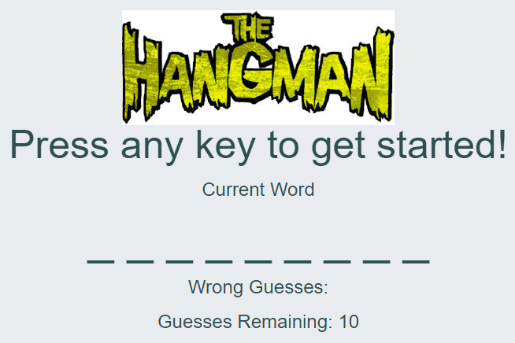
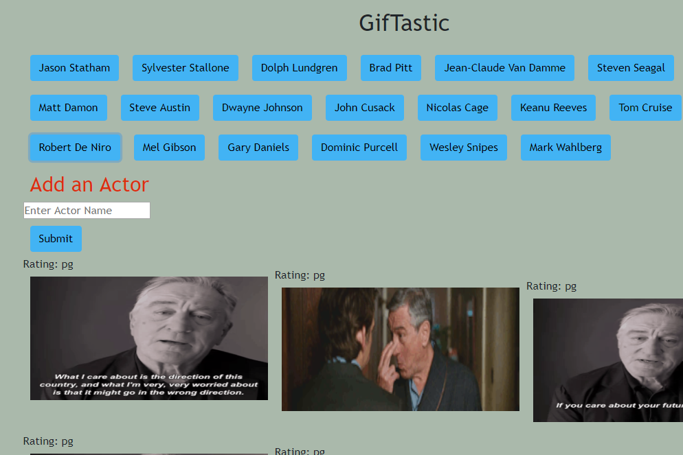
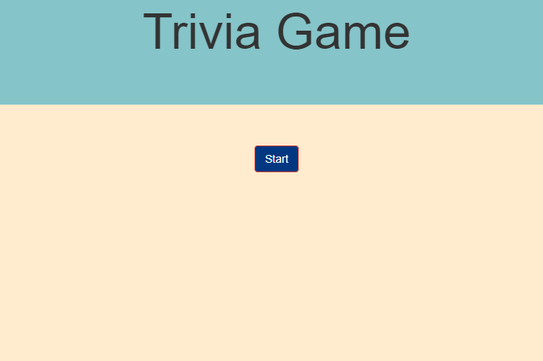
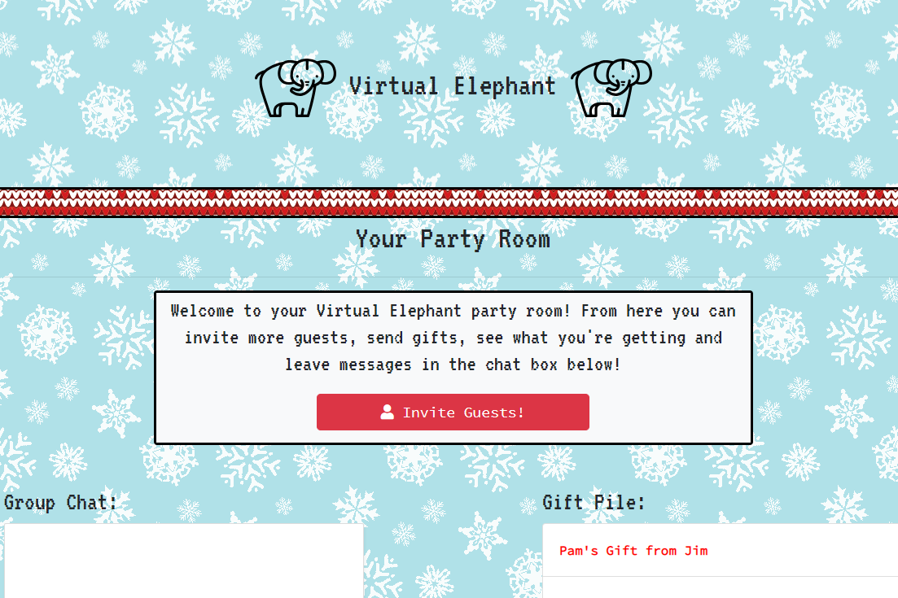
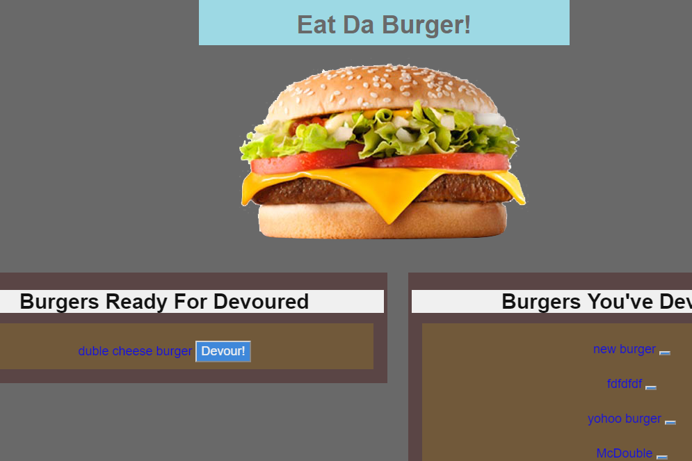
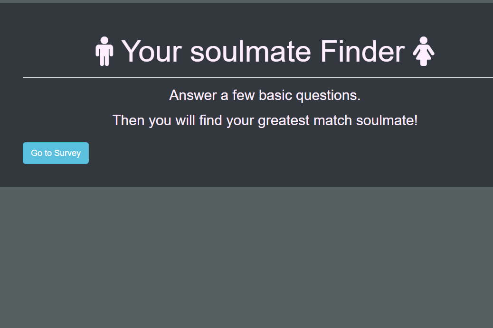

Projects
Group Project One
This application allows users to quickly and easily get basic information about cities around the world. The user enters the name of the city they wish to search and then selects the correct city from a list possible matches.Once a city is selected, a card is added to the page with basic information about the city including the current time and weather summary and a marker for the city is added to the map and the map centers on the new city. The user can search for more cities and the information cards will be added to the page so that the user can compare the information for multiple cities quickly and on one page. The cards can also be easily removed. This Project was developed by Gezahegn, David, and Seth. We used the Teleport API, the OpenWeatherMap API, and the Leaflet.js javascript library.

Project One
Project-1 Link to the deployed version.Link to the code on GitHub.
Word Guess Game
You can press any keys to get started with the game. its very easy just look at the screen how many letter in the word and start guessing. if you get Everything right, then you will get the alert saying you won. If you did not get every letter right, the you will get the alert saying you lost. Then the game start over.
Hangman Game
Word Guess Game Deployed version Link.Link to the code on GitHub.
GifTastic
This app is web based Gif fetching application that uses the GIPHY API to fetch users choice of GIFs. this app have an click to play/ stop feature when clicked. i used the following technologies to make this app HTML5/css/javascript/gifphy API. When the user clicks one of the still GIPHY images, the gif will animate. If the user clicks the gif again, it will stop playing and go back to still.
Giftastic
GifTastic Deployed version Link.Link to the code on GitHub.
↓↓↓
Train Scheduler
Used technologies to render the train schedule and gives access to admin panel on the webpage are HTML, CSS, JavaScript, Momentjs, and jQuery. This is train schedule app and its uses Firebase to host a globally available set of data that will be saved and manipulated using Moment.js to offer up-to-date information about several trains arrival times and next arrival time.

Train Scheduler
Train-Scheduler Deployed version Link.Link to the code on GitHub.
Triva Game
This is multiple choice trivia game created by using html, css, javaScript, and jQuery. it give you one question and 15 seconds and you have to answer within given time, if you select wrong, then it will display right answer then display next question. If your give time run out, it will display you have no more time left message then display next question. When you finshed all questions, it will display how well you did.
Triva Game
Trivia Game Deployed version Link.Link to the code on GitHu.b.
Group Project two
Virtual Elephant Gift Exchange is an online gift sharing application made for times when you can't get together. It allows users to recreate the excitement of gift giving even when circumstances mean that they can't be there to give their present in person. Allows user to trade gifts on their schedule regardless of distance or holidays delivery delays.

Project Two
Virtual Elephanet heroku Deployed Link.Link to the code on GitHu.
↓↓↓
Eat Da Burger
Eat Da Burger! is a restaurant app that lets users order and devour burgers.
This APPs Feature
Whenever a user orders a burger, the app will display the burger on the left side of the page.
When the user clicks the Devour! button, the burger will move to the right side of the page.

Eat Da Burger
Heroku Deployed version Link.Link to the code on GitHu.b.
Frinder Finder
FriendFinder application -- basically a dating app. This full-stack site will take in results from your users' surveys, then compare their answers with those from other users. The app will then display the name and picture of the user with the best overall match. used Express to handle routing. this app deplyed to Heroku so other users can fill it out. the survey have 10 questions of your choosing. Each answer should be on a scale of 1 to 5 based on how much the user agrees or disagrees with a question.
Friend Finder
Heroku Deployed version Link.Link to the code on GitHu.b.